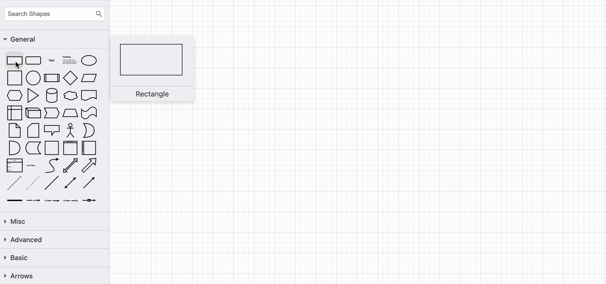
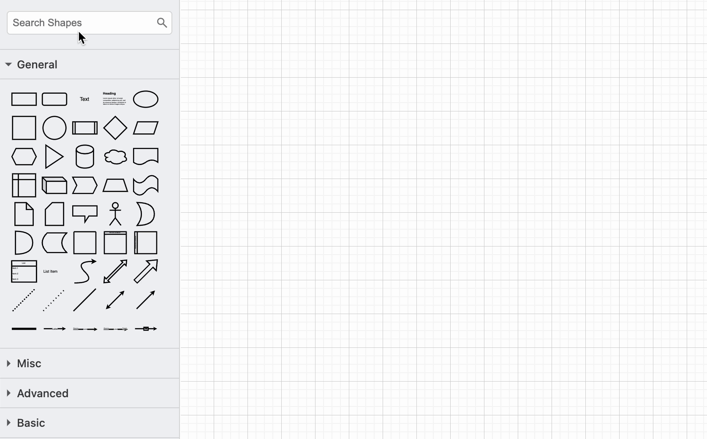
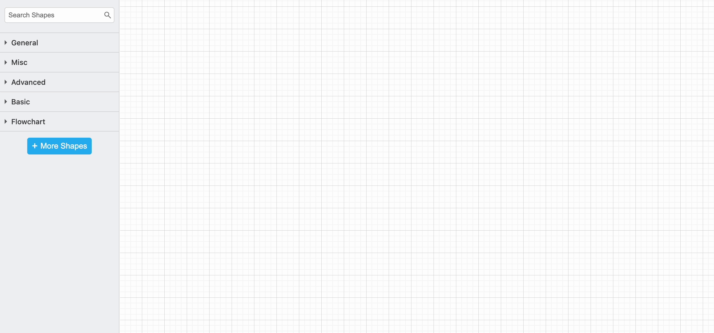
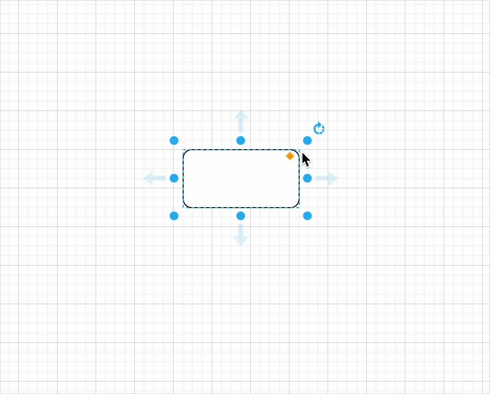
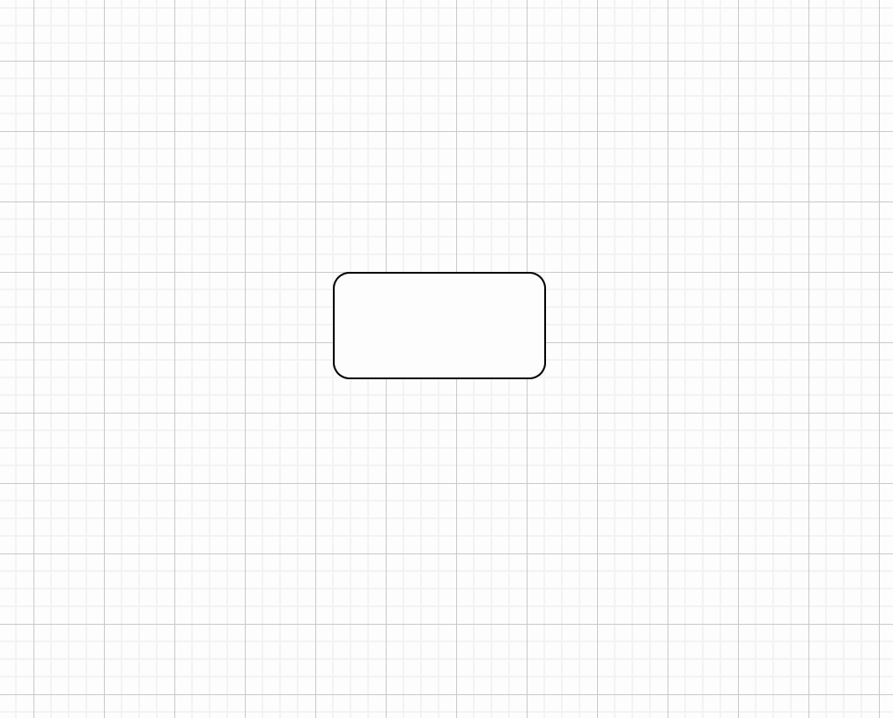
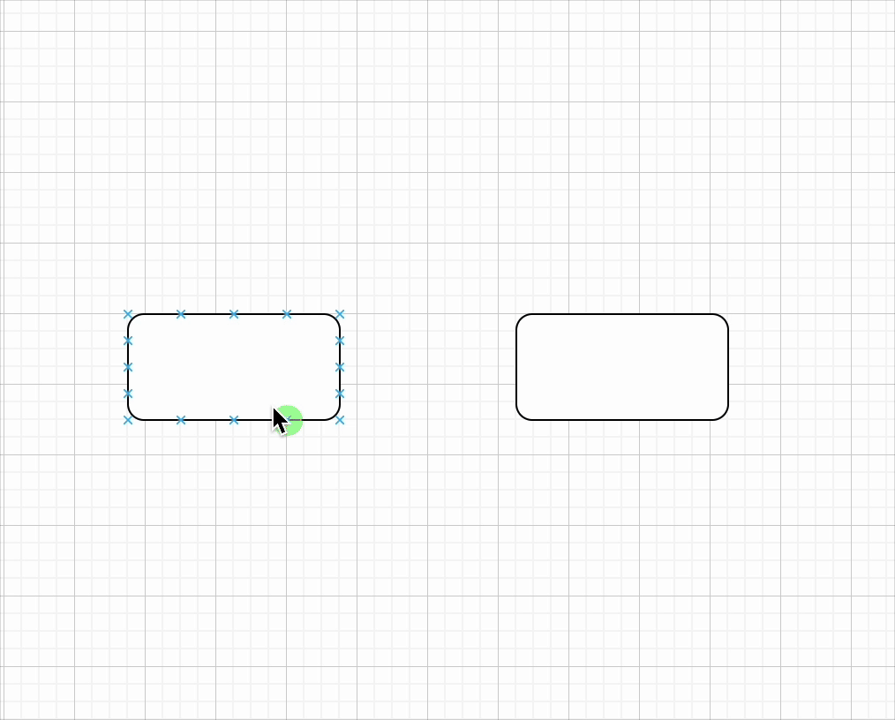
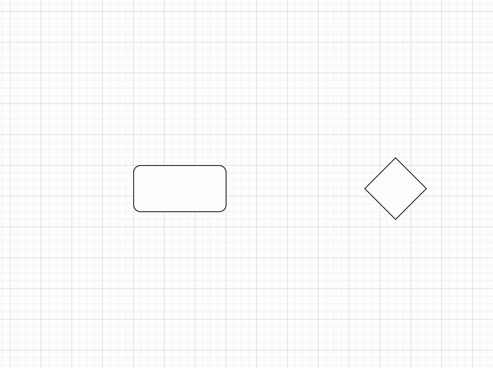
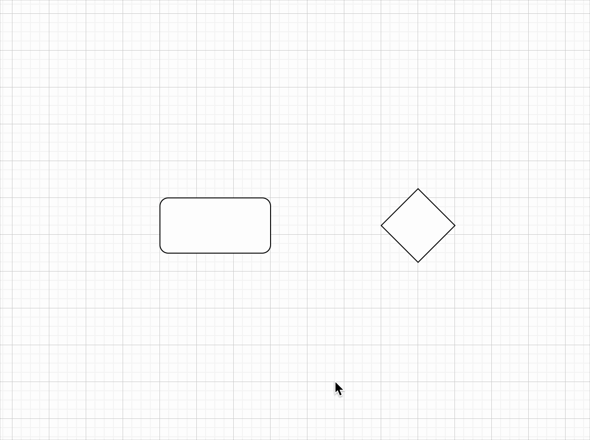
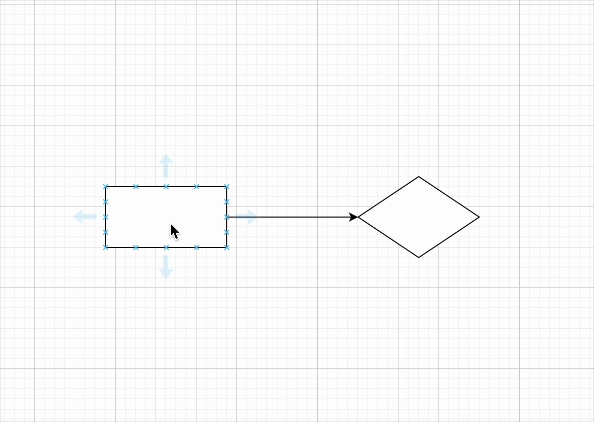
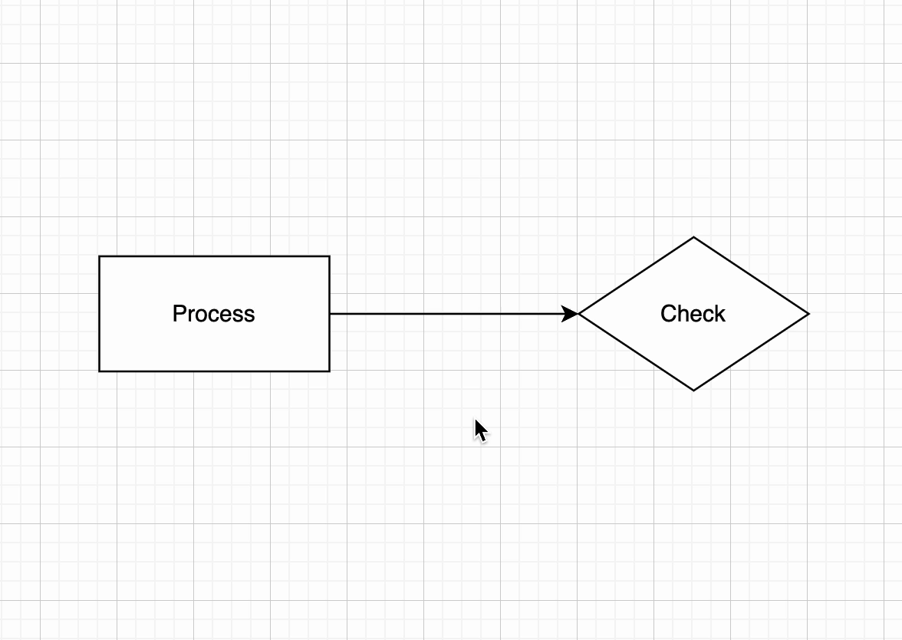

Create a diagram
Overview
In this section, you will learn how to create diagrams by adding, modifying, and connecting shapes. You will also explore how to label elements effectively to make diagrams more understandable. This guide provides step-by-step instructions to help you master these fundamental skills.
Fundamental Steps to Create a Diagram
Add a Shape
You can insert a shape into the drawing canvas using one of these methods:
-
Click on a shape in the General shape library to place it on the canvas.
-
Drag and drop a shape from the General shape library to your desired location.
-
Double-click on an empty space in the canvas and select a shape from the menu.

Search for a Shape
Easily locate a specific shape using the Search Shapes feature:
-
In the left sidebar, find the
Search Shapesbox at the top. -
Type a keyword related to the shape you need (e.g.,
flowchartorUML). -
Click on the desired shape from the search results or drag it onto the canvas.

Add a Shape Library
In addition to the shapes in the General and Advanced shape libraries, you can use shapes from the Flowchart shape library.
-
Click on More Shapes at the bottom of the left sidebar.
-
A pop-up window will appear, displaying various shape categories. Check the boxes next to the desired shape library to enable it.
-
Click Apply to include the selected libraries in your canvas.

Warning: Excessive library list
Enabling additional shape libraries gives you more options, but too many libraries can make it harder to find the shapes you need.
Move, Resize, Rotate, and Delete Shapes
Move: Click and drag a shape to reposition it.
Resize: Select a shape and drag its round blue dots to adjust its size. Hold Control (Windows/Linux) or Command (Mac) to keep it centered. Hold Shift to maintain the shape's proportions.
Warning: Distorted shapes
If you resize without holding Shift, your shape may become distorted.

Rotate: Click the shape and drag the rotate handle (round arrow) at the top right to spin it around its center.

Delete: Select a shape and press Backspace or Delete, or use the *Delete tool in the toolbar.

Connect the Shapes
Draw a Floating Connector
Floating connectors automatically adjust their position as shapes move or their connecting paths change.
-
Hover over the source shape until directional arrows appear.
-
Move your cursor over the arrow in the direction you want to create a connection.
-
Drag the connector from the source shape to the target shape.
-
Release when the target shape’s outline turns blue.

Draw a Fixed Connector
Fixed connectors stay attached to a specific point on a shape, regardless of movement.
-
Hover over the source shape to reveal connection points (small crosses along the perimeter).
-
Drag a connector from a connection point on the source shape.
-
Hover over the target shape until its connection points appear.
-
Position the cursor over a connection point until it highlights green, then release to attach the connector.

Add Labels
Add a Shape Label
Shape labels make it easier to understand a diagram quickly.
- Click on a shape and type the text to add a new or replace a label.
- Press
Enter(Linux/Windows) orCommand + Enter(Mac) to save the label.
Tip: Line break inside a label
Press Shift + Enter to add a line break in a label.

Add a Connector Label
You can add more than one label to a connector - at the source end, the target end, and in the middle.
- Double-click at the desired location on the connector to add a label.
- To reposition the label, click on it and drag the
small yellow diamondto a new position.
Tip: More precise positioning
If your label isn't perfectly positioned, zoom in and use the arrow keys for fine adjustments.

Conclusion
By the end of this section, you will have successfully learned the following:
-
How to add, move, resize, and delete shapes on the drawing canvas.
-
How to connect shapes using floating and fixed connectors.
-
How to add labels for both shapes and connectors.
Great job!  You can go ahead and click on the link below to move on to the next step:
You can go ahead and click on the link below to move on to the next step: